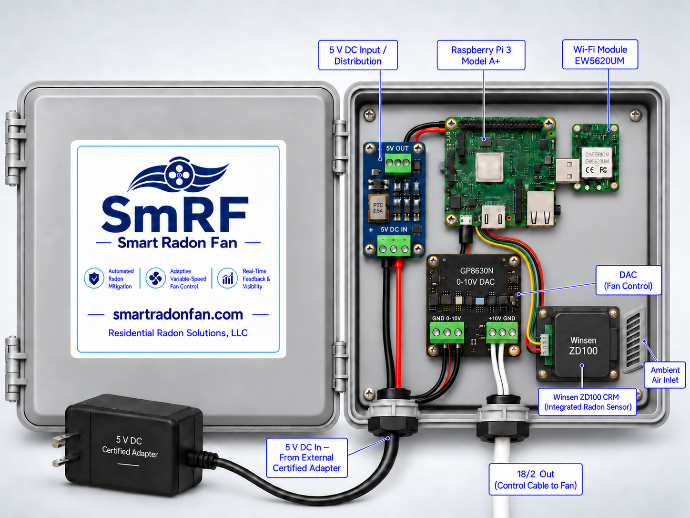
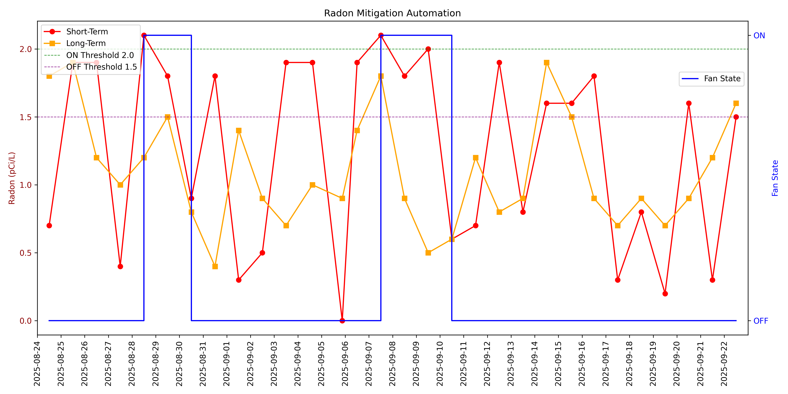
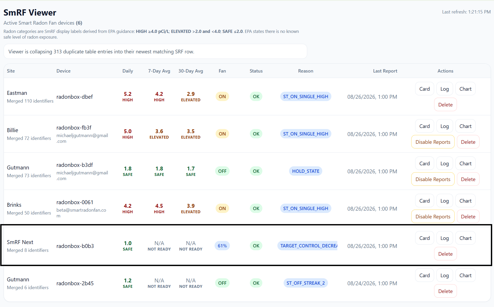
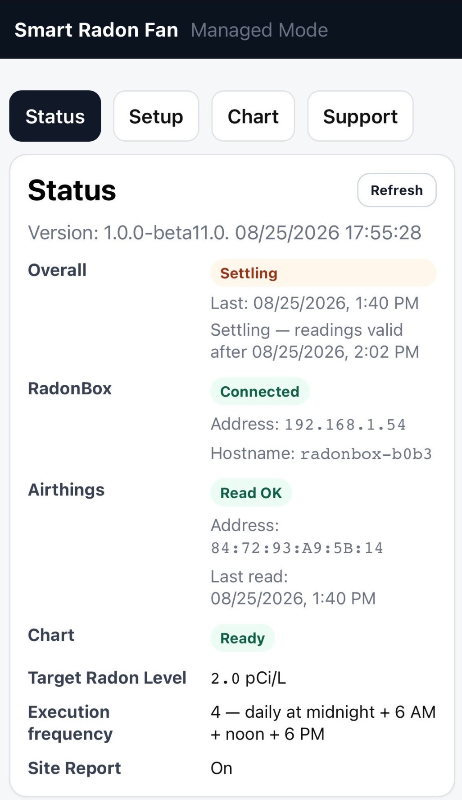

A continuous radon monitor measures the result that matters. SmRF compares that measurement with a selected radon target and uses a control algorithm to adjust a compatible variable-speed fan. The cycle repeats as new radon measurements arrive.
The fan-control loop remains local. The SmRF Viewer provides remote verification, history, alerts, reports, and installer account visibility.
Set the radon target. SmRF controls the fan. Viewer verifies the result.
The production concept packages local control, communications, power conversion, and the 0–10 V fan-control interface into a purpose-built enclosure. The fan keeps conventional AC power; SmRF sends only the low-voltage command over ordinary 18/2 cable.

For a new mitigation system, SmRF can be installed with a compatible variable-speed fan from the start. For an existing system, a fixed-speed fan can be replaced with a compatible variable-speed model and an 18/2 control pair can be run through the basement, crawl space, or attic back to SmRF.
Early SmRF work demonstrated that radon responds to commanded fan operation. Variable-speed fans take the next logical step: instead of choosing only ON or OFF, SmRF can regulate the amount of mitigation toward a specified radon level.
The installer selects the desired radon level; SmRF adjusts fan output toward that target.
Mitigation can increase or decrease as radon and building conditions change.
The fan receives a local 0–10 V command over ordinary 18/2 cable.
The Viewer shows the measured radon result alongside fan speed, status, history, and alerts.
SmRF began by automating conventional fixed-speed radon fans. Those installations were important: the charted field data showed clear radon response to commanded fan states and helped validate the CRM-feedback, control, reporting, and Viewer platform.

An installer can create a Viewer account and add the SmRF installations it manages. Each claimed installation appears in one organized dashboard, allowing the installer to monitor performance across its installed base and focus attention where it is needed.
The Viewer can organize current radon values and averages, variable fan speed, system status, decision reason, last report, cards, logs, charts, alerts, and reports. A site-specific claim process associates each SmRF with the appropriate installer account.

The local managed interface shows what is happening inside an individual SmRF: sensor connection, system state, selected radon target, execution frequency, chart status, and reporting state.

We welcome conversations with radon fan manufacturers, equipment distributors, mitigation installers, contract manufacturers, and research organizations interested in CRM-based variable-speed mitigation.
Patent pending. Development and field-validation platform; final production configuration and certification are in progress.